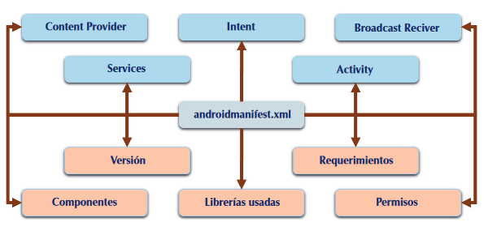

Para incluir algunos de los anteriores componentes en las aplicaciones, será necesario que el sistema reconozca la existencia de ese componente, y eso lo hará leyendo el archivo Manifest (AndroidManifest.xml) de la APP. El archivo de manifiesto proporciona información esencial sobre la aplicación al sistema Android, información que el sistema debe tener para poder ejecutar el código de la APP. Todas las aplicaciones tienen este archivo, cuya gestión será fácil a través del entorno de desarrollo; una aplicación debe tener declarados todos sus componentes
en este archivo.
La principal tarea es informar al sistema acerca de los componentes de la aplicación. Otras funciones de este archivo serán registrar los permisos asociados a la aplicación, librerías que utiliza, declarar las necesidades de software/hardware, así como el nivel de API mínimo que requiere la aplicación.

Puedes ver el archivo de tu aplicación en la ruta app/manifests/AndroidManifest.xml
Aunque existen otras, las etiquetas que es necesario conocer inicialmente son las siguientes:
- Manifest. Engloba a las demás etiquetas. Define el espacio de nombres, el nombre del paquete y atributos del mismo.
- Application. Contiene metadatos de la aplicación (título, icono, tema), etiquetas de actividades, servicios, proveedores de contenidos y receptores de broadcast.
- Uses‑Sdk. Indica las versiones del SDK sobre las que podrá ejecutarse, el nivel mínimo de API y el utilizado para su desarrollo.
- Uses‑Permission. Declara los permisos que la aplicación necesita para operar. Serán presentados al usuario durante la instalación para que los acepte o deniegue. Algunos de los permisos que podemos declarar aquí son los siguientes:
- INTERNET: conexión a Internet.
- READ_CONTACTS: leer en la lista de contactos.
- WRITE_CONTACTS: escribir en la lista de contactos.
- SEND_SMS: enviar SMS.
- ACCESS_COARSE_LOCATION: localización mediante telefonía.
- ACCESS_FINE_LOCATION: localización mediante GPS.
- BLUETOOTH: permite el uso del Bluetooth.
<uses-permission android:name=”android.permisssion.ACCESS_FINE_LOCATION”></uses-permission>
<uses-permission android:name=”android.permisssion.ACCESS_COARSE_LOCATION”></uses-permission>
<uses-permission android:name=”android.permisssion.INTERNET”></uses-permission>
- Permission. Define un permiso que se requiere para que otras aplicaciones puedan acceder a partes restringidas de la aplicación.
- Instrumentation. Nos permite definir un test de ejecución para las actividades y servicios.